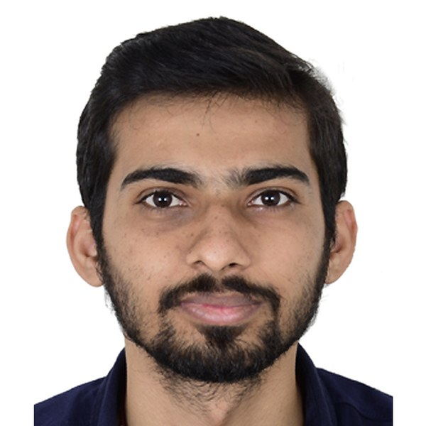

Sep 2018 – Jan 2019
Engineer (O&M)
Simms Engineering · Veraval, Gujarat
- Operated and maintained a 66 kV substation at Indian Rayon.

I keep metro trains running by finding what breaks inside them. I work in C on the middleware of railway Train Control & Monitoring Systems at Alstom, tracing real-time faults through Linux, train networks and hardware until the root cause is clear.
When a train misbehaves, the cause can sit anywhere from the board to the application. These are the layers I work across. Open one to see what I do there.
From a 66 kV substation to the middleware of metro trains. Scroll and the train moves with you.
Software and systems delivered for four countries, on site and from Bangalore.
About a month each visit, working with the development team.
TCMS software contribution.
TCMS software contribution.
Commissioned a coal sampling gantry system.
What I reach for, grouped by the job it does.
C, C++, Python, Bash, IEC 61131-3 (ST/SCL, FBD, Ladder), VBScript, PHP, HTML/JS
GDB, LTTng, Wireshark, Docklight, log and trace analysis
Linux: Yocto, Debian
AGATE (Alchemist, Diagnostics Editor, OCoCheTo, Dataplug Manager), ControlBuild, CODESYS
GitLab, IBM ClearCase / ClearQuest, Redmine
TIA Portal V16, SIMATIC Manager, WinCC V7.5, SCOUT, WPLSoft, Node-RED, MS SQL Server
Open to roles in embedded Linux, middleware and real-time systems. Based in Bangalore.